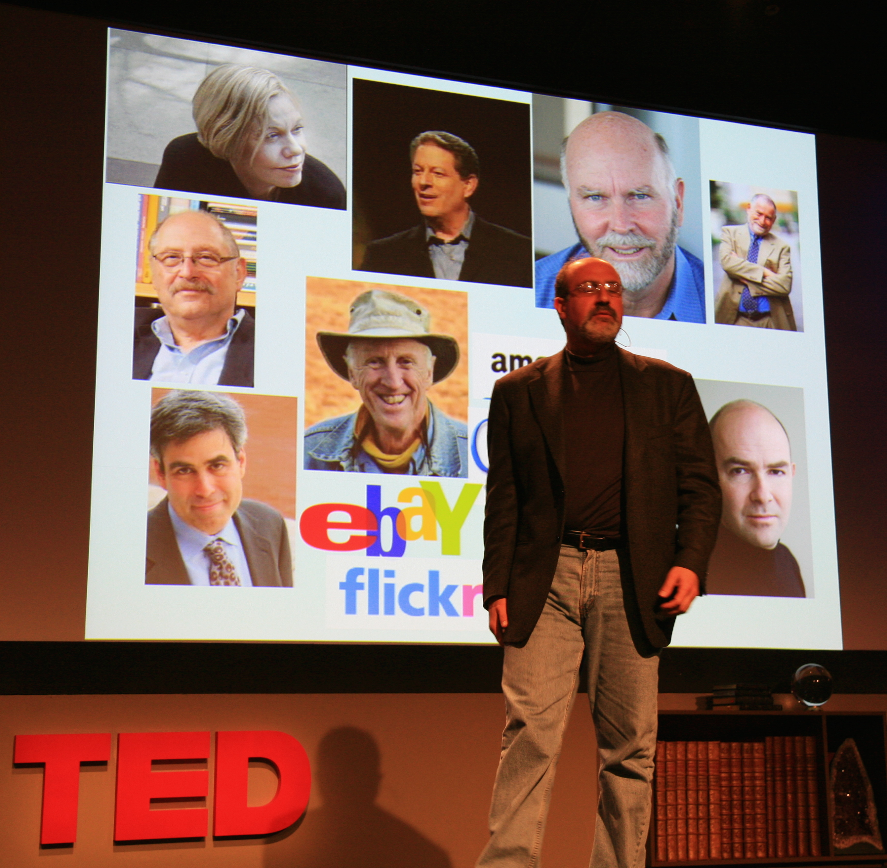

認知バイアス
2007年、ベイルートからニューヨークへ渡ったトレーダーは、一冊の本でこう言った。「人間は事実の列を、事実の列のまま受け取ることができない」——それは心理学ではなく、彼が金融市場で10年以上かけて見てきた現実の記録だった。
ナシム・タレブが『ブラック・スワン——極めてありえない出来事の衝撃』を刊行(4月17日、Random House)。第6章で「ナラティブの誤謬」を命名し、学術的にもこの語が定着する契機となる。
この年の世界——1月9日、アップルが初代iPhoneを発表(発売は6月29日)。2月、サブプライム住宅ローンの延滞率が急上昇し、翌2008年のリーマン破綻へと繋がる。
『ブラック・スワン』は翌2008年の金融危機を「予言した本」として世界的ベストセラーになり、『サンデー・タイムズ』は「第二次世界大戦後に最も影響力のあった12冊」に本書を選んだ。
株価チャートを見ているとき、あなたは必ず何かを読み取っている。上昇トレンドのはじまり、頭と肩の形、下降三角形、二番天井——。画面に並んでいるのは数字の列にすぎないのに、いつの間にか自分が物語を語り始めている。
これは相場だけの話ではない。ニュースを読むとき、誰かの行動を説明するとき、自分の半生を振り返るとき。あらゆる場面で同じことが起きている。事実を受け取っているつもりで、実は物語を書き込んでいる。
この癖には名前がある。そして、それを乱数のチャートを前にして初めて言語化した人物がいる。
この記事では、完全に無意味な数字の列から、あなた自身がどれほど自動的に物語を作り出してしまうかを、インタラクティブな体験で確かめる。知識としてではなく、自分の手の動きとして気づくことに意味がある。
マンハッタンの書店に一冊のハードカバーが並んだのは、2007年4月17日のことだった。著者はレバノン北部アミウン出身の元デリバティブ・トレーダー、ナシム・ニコラス・タレブ。副題は「極めてありえない出来事の衝撃」。装丁には、一羽だけ墨で塗られた黒い白鳥の姿があった。

ナシム・ニコラス・タレブ
Nassim Nicholas Taleb, 1960–
レバノン系アメリカ人の元デリバティブ・トレーダー、数理統計学者、エッセイスト。パリ大学博士、ウォートンMBA。1987年ブラックマンデーを含む稀な暴落で大きな利益を上げた経歴を持ち、のちにリスク工学者へ転じた。『まぐれ』『ブラック・スワン』『アンチフラジャイル』など全5巻の思索集『Incerto』で知られる。
Photo: Steve Jurvetson / CC BY 2.0 (via Wikimedia Commons)
タレブがこの本で攻撃したのは、予測不可能な出来事に直面したとき人間が必ず行う、ある所作だった——それを事後的に「予測できた」物語に書き換えるという所作である。9.11のあと、リーマンのあと、株価暴落のあと、私たちは必ず「10個の兆候を見逃していた」と知る。兆候は、たいてい暴落が起きた後にしか見えない。
タレブはこれに名前を与えた。ナラティブの誤謬(the narrative fallacy)——事実の連なりをそのまま見つめることができず、論理的な矢印を強引に差し込んでしまう、人間の認知の癖である。
"The narrative fallacy addresses our limited ability to look at sequences of facts without weaving an explanation into them, or, equivalently, forcing a logical link, an arrow of relationship, upon them."
ナラティブの誤謬が扱っているのは、事実の連なりをそのまま見つめることができず、説明を織り込んでしまう——あるいは論理的なつながり、関係性の矢を強引に差し込んでしまう、という人間の限界である。
— Nassim Nicholas Taleb, The Black Swan (2007), Chapter 6
タレブの文章はどこか挑発的だ。学者の落ち着きはない。原文を読むと、この男は市場で身銭を切ってきた人間の語気で書いていると分かる。そして、だからこそ彼の診断には説得力がある。——因果因果(causation)
原因と結果の関係。「AだからBが起きた」という時間と関係性の結びつき。心理学では、人間が相関のある出来事に自動的に因果関係を読み込みやすいことが繰り返し示されてきた。がない場所に、人間は因果を見てしまう。パターンがない場所に、パターンを見出してしまう。それが強みとして働く場面は確かにある。だが、重要な判断を歪める場面のほうが、ずっと多い。
✗ よくある誤解
「物語を作るのは悪いこと」
✓ 実際は
物語化は複雑な世界を扱う効率的な戦略。だが、重要な判断では歪みになる。
✗ よくある誤解
「自覚すれば防げる」
✓ 実際は
自覚しても効果は限定的。反証主義反証主義(ポパー的訓練)
哲学者カール・ポパー(Karl Popper, 1902–1994)が提唱した科学哲学。「仮説は反証できる形で立てよ、そして支持する証拠より反証しうる証拠を探せ」とする。確証バイアスやナラティブの誤謬への古典的な処方箋として挙げられるが、訓練を受けた科学者でも日常の思考では引き込まれることが繰り返し示されている。を叩き込まれた科学者でも引き込まれる。
✗ よくある誤解
「詳細な物語ほど信頼できる」
✓ 実際は
逆。詳細を足すと確率は下がるのに、物語はもっともらしく連言錯誤(Conjunction Fallacy)
Tversky & Kahneman (1983)。「A」より「AかつB」のほうが確率が高いと誤判断する現象。「銀行員のリンダ」問題で有名。見える。
事実の列が脳を通ると、必ず因果関係の矢印が差し込まれる。これが「わかった」と感じる正体だ
タレブの診断は、認知心理学の世界でも無視できなかった。4年後の2011年、ダニエル・カーネマンDaniel Kahneman(1934–2024)
イスラエル系アメリカ人心理学者。プロスペクト理論で2002年ノーベル経済学賞。著書『ファスト&スロー』は累計数百万部のベストセラー。は『ファスト&スロー』の第19章「理解の錯覚」を、タレブの概念からそのまま始めた。この章だけが、本書の中で明らかにTalebianTalebian(タレブ的)
ナシム・タレブの思考スタイルを形容する英語の造語。不確実性・ランダム性・反脆弱性を中心に置き、アカデミックな平明さより挑発的な断定と実務家視点を好む論調を指す。カーネマン『ファスト&スロー』の書評家たちが第19章を評してこの語を使った。な空気を帯びている——と書評家は書いた。タレブが市場で気づいたことを、カーネマンは実験室の言葉に翻訳した。
ここから先は、説明を読むより、自分の手で試したほうが速い。下に一本のチャートが描かれている。これは株価に見える。チャートパターンを学んだ人なら何か読み取れそうに感じる。だがこのデータは、標準正規分布からサンプリングした増分をただ足し合わせただけの——完全な乱数の累積だ。
30日分だけ表示する。ここから次の30日でどうなるか、あなたの目で予測してみてほしい。正解を当てるためではない。なぜその選択肢を選んだのか——そちらの方に、今回の核心がある。
このチャートから、次の30日(Day 31〜60)はどうなると予測するか。
最も自然に感じる筋書きを一つ選んでほしい。
あなたが見た物語
乱数から生まれたチャートに「ヘッド・アンド・ショルダー」「ダブルトップ」「三角保ち合い」——テクニカル分析の教科書に載っている形が、あなたは必ずどれか一つ(あるいはいくつも)見たはずだ。専門家でなくても見える。むしろ、専門家ほどよく見える。これが、タレブが身銭を切って気づいた現実だった。相場で起きているチャートパターンの大半は、乱数からでも同じ頻度で現れる。
もう一つ試してほしい。下の二つのチャートのうち、どちらがより「実在の株価らしく」見えるか選んでほしい。3問ある。直感で答えてかまわない。
どちらのチャートが、実在の株価のように見えますか？
チャート A
チャート B
"A compelling narrative fosters an illusion of inevitability."
説得力ある物語は、必然性の錯覚を育てる。
— Daniel Kahneman, Thinking, Fast and Slow (2011), Ch. 19「理解の錯覚」
ナラティブの誤謬は単一の現象ではない。少なくとも三つの層が重なって作動している。上の層から順に見ていくと、なぜ自覚だけでは防ぎきれないのかが分かる。
ナラティブの誤謬が作動する三つの層
アポフェニアApophenia
1958年、ドイツ人精神科医 Klaus Conrad が統合失調症初期の特徴として記述したドイツ語造語。のちに健常者の認知一般に拡張され、「無関係な事物に関連を見出す」傾向を指す語として定着した。——無関係な刺激に関係を読み込む傾向。雲に顔を見る、乱数の点列に線を引く、ルーレットの出目に波を見る。これは欠陥ではない。天敵の影をいち早く察知できた祖先が生き延びた、進化的な贈り物だ。
問題は、雲と天敵を区別する装置が、「関係がない」という結論を出すのが極端に苦手なことだ。ないものを「ない」と見るより、あるかもしれないと見るほうが安全だった。だから今も、ないものが見える。
検出されたパターンに、脳は自動的に「AだからB」の矢を差し込む。ベルギーの心理学者ミショットの1946年の実験Michotte の因果知覚実験(1946)
アルベール・ミショット(Albert Michotte, 1881–1965)が著書『因果の知覚(La perception de la causalité)』で報告した一連の実験。画面上で動く点Aが静止している点Bに接触した瞬間、BがAと同じ方向へ動き出す——このだけの刺激を見ただけで、ほぼ全員の被験者が「AがBを押した」と報告した。接触から動きまで数百ミリ秒の時間差を入れると、この因果感覚は消える。推論ではなく、知覚レベルで因果が立ち上がる証拠として古典となっている。が示したように、二つの点が接触して動くだけで、人間は「押した」「追いかけた」という因果を知覚する。推論ではなく、知覚レベルで因果が立ち上がる。止めようがない。
実用上の意味：ニュース見出し「インフレ懸念で株価下落」は、多くの場合、下落が先に起き、編集者がその後に「懸念」の物語を選んだ結果だ。だが見出しを読む私たちには、因果の順序はもう見えない。
結果を見た後、それに合うように過去の記憶を編集し直す。カーネマン『ファスト&スロー』第19章が詳しく論じた現象で、結果を知ったあとの「振り返り」では、偶然は偶然に見えなくなる。起きたことが必然に見え、起きなかった別のシナリオは想起されにくくなる。
これは、当サイトでも扱っている後知恵バイアスと隣接する。ナラティブの誤謬は、後知恵バイアスを支える物語装置だと言ってもいい。
三つの層は独立に走りながら互いを強化する。パターンを見て、因果を差し込み、結果に合わせて記憶を書き換える。あなたが物語を「発見した」と感じるとき、実際には物語があなたの中で三回組み立てられている。
| 事実の列(脳に届くもの) | 物語(脳が出力するもの) |
|---|---|
| 2007-01-09: iPhoneが発表された | スマートフォン時代の幕開け |
| 2007-02: サブプライム延滞率が上昇 | 金融危機の「最初の兆候」 |
| 2007-04-17: 『ブラック・スワン』刊行 | リーマン破綻を「予言」した本 |
| 2008-09-15: リーマン破綻 | 前兆を見逃した愚か者たち |
左の事実は、どれも2008年以前には「2008年への道」に見えなかった。右の物語は、2008年のあとに出来上がった
1697
オランダ探検家、オーストラリアで黒い白鳥に遭遇
それまで欧州では「白鳥は白い」が定義だった。タレブの書名の寓話的起源。「ありえないと信じたものが、実在した」。
1946
ミショット『因果の知覚』
接触する二つの点を見ただけで、人間は因果を知覚する。「推論」ではなく「知覚」レベルで物語が立ち上がる証拠。
1958
コンラート、"apophenia" を造語
ドイツ人精神科医クラウス・コンラートが、統合失調症初期に見られる「意味の氾濫」を記述した語。のちに健常者の認知にも拡張された。
2001
タレブ『まぐれ』(Fooled by Randomness)
思索集『Incerto』シリーズの第一作で、タレブが一般読者に向けて書いた最初の書。運と実力を取り違える市場の心理を論じる。ナラティブ概念の萌芽が随所に。
2007
タレブ『ブラック・スワン』刊行(4月17日)
第6章で「ナラティブの誤謬」を明示的に命名。翌2008年のリーマン破綻を受け、本書は世界的ベストセラーに。
2011
カーネマン『ファスト&スロー』第19章
「理解の錯覚」の章で、タレブの概念を実験心理学の言葉に翻訳。チャプター全体が明示的に『ブラック・スワン』を参照する。
ナラティブの誤謬の厄介さは、タレブ自身も認めているとおり、物語化をやめろというアドバイスが有効でないことにある。人間は物語なしには世界を扱えない。膨大な事実の海を毎朝泳ぎ切るには、要約と因果の物語が要る。これは認知の効率装置であり、同時に歪み装置だ。
タレブの処方は意外に控えめだ。物語そのものを追放するのではなく、「自分が今、物語を書いている」ことに気づけと彼は言う。その気づきが、最悪の判断を数段階だけ遠ざける。
"The way to avoid the ills of the narrative fallacy is to favor experimentation over storytelling, experience over history, and clinical knowledge over theories."
ナラティブの誤謬の害を避ける道は、物語より実験を、歴史より経験を、理論より臨床的な知識を、優先することだ。
— Nassim Nicholas Taleb, The Black Swan (2007), Chapter 6
実験は反証できる。経験は身体に残る。臨床的な知識は具体で、他の事例に簡単には拡張されない。どれも物語に抵抗する性質を持つ。タレブが「トレーダーの視点」と呼ぶのはおそらくこれに近い。彼が市場で10年以上かけて身につけたのは、チャートに形を見たときに、その形がデータの側にあるのか自分の脳の側にあるのかを毎回問い直す習慣だった——上のシミュレーターで再生成を数回押しただけで、あなたの脳が勝手に別の物語を紡ぎ続けると気づいたあの感覚を、毎日の判断の場でも保ち続けるということだ。
私たちにそこまでは要求されない。ただ、次に「自分はこの流れが読めている」と感じた瞬間に、立ち止まって一つだけ問うてほしい——この「流れ」は、本当にデータの側にあるのか、それとも、私の側で今組み立てられているのかと。答えが揺らぐなら、物語はまだ成立していない。その揺らぎが、唯一の防波堤だ。
『ブラック・スワン』タレブ(2007)
概念の原典。第6章で明示的に命名。翌2008年のリーマン破綻後、本書は世界的ベストセラーになり、『サンデー・タイムズ』は「第二次世界大戦後に最も影響力のあった12冊」の一つに選んだ。
『ファスト&スロー』カーネマン(2011) 第19章
「理解の錯覚」の章全体が明示的にタレブを参照し、心理学の語彙で再構成する。物語は「わかった」という感覚を生むが、それは理解ではなく、理解の錯覚である——という一文は、この章の心臓にあたる。
『まぐれ』タレブ(2001)
『ブラック・スワン』の前に出た同シリーズ第一作。運と実力の混同を、トレーダーの視点から論じた。ナラティブの誤謬の概念は名前を持たないまま、ここに既に存在している。
金融ニュースの見出し文化
「インフレ懸念で株価下落」「楽観論から反発」——市場の動きに単一の原因を紐づける記事形式は、ナラティブの誤謬の最も大衆化された形だ。多くの場合、因果関係は夕方のニュースルームで後付けされている。
The Black Swan: The Impact of the Highly Improbable
ナラティブの誤謬が初めて命名された章を含む。邦訳は『ブラック・スワン——不確実性とリスクの本質』(ダイヤモンド社, 2009)。この用語の議論はどこから始めるにせよ、まずここに戻ることになる。
Thinking, Fast and Slow — Chapter 19: The Illusion of Understanding
第19章がタレブの概念を明示的に取り上げ、実験心理学の言葉に翻訳する。「物語は理解を生まない。理解の錯覚を生む」が本章の結論。邦訳は『ファスト&スロー』(早川書房, 2012)。
Fooled by Randomness: The Hidden Role of Chance
タレブが一般読者に向けて書いた最初の書で、思索集『Incerto』シリーズの第一作。運と実力、シグナルとノイズを混同する市場心理を扱う。ナラティブ概念は未命名だが、核は既にここにある。
ナラティブの誤謬の下層(パターン検出)にあたる概念の系譜。コンラートの原著は独語で入手困難だが、Wikipediaの解説が簡潔で概観に向く。